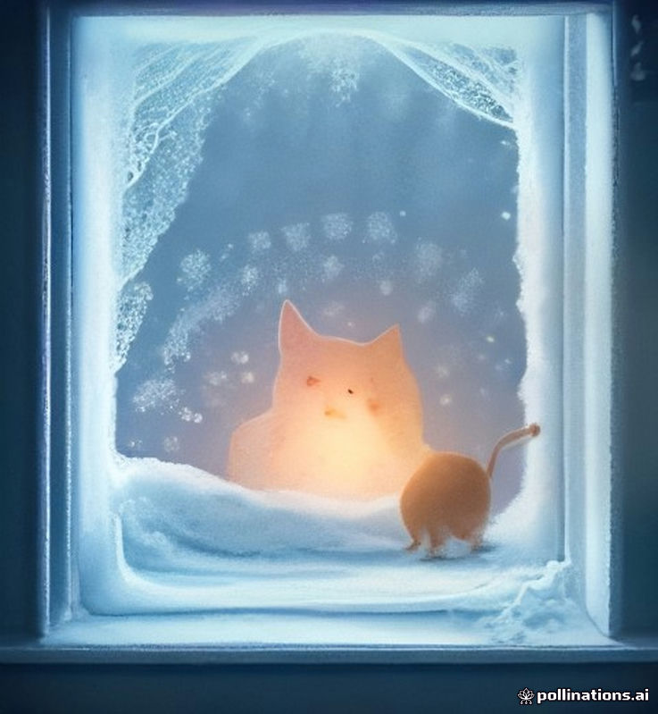
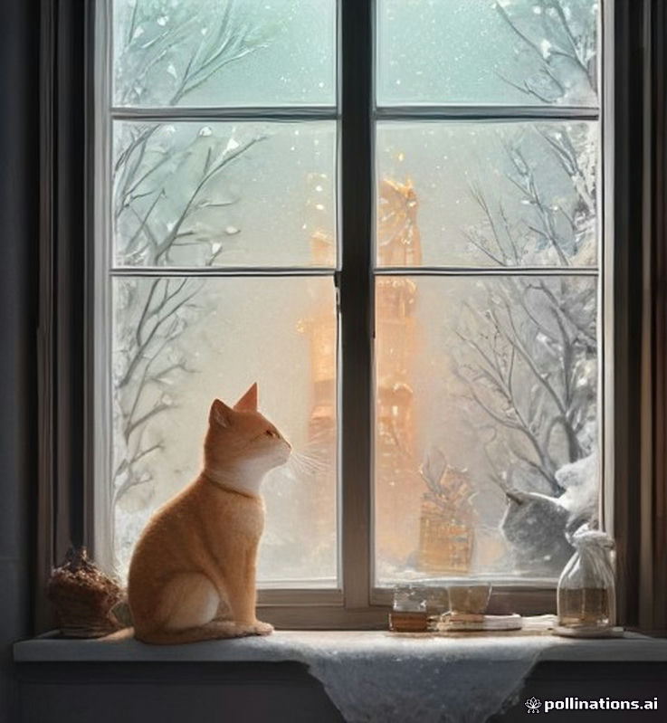
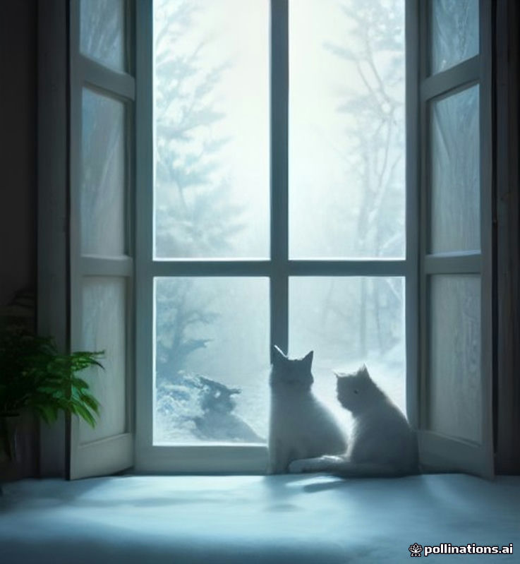
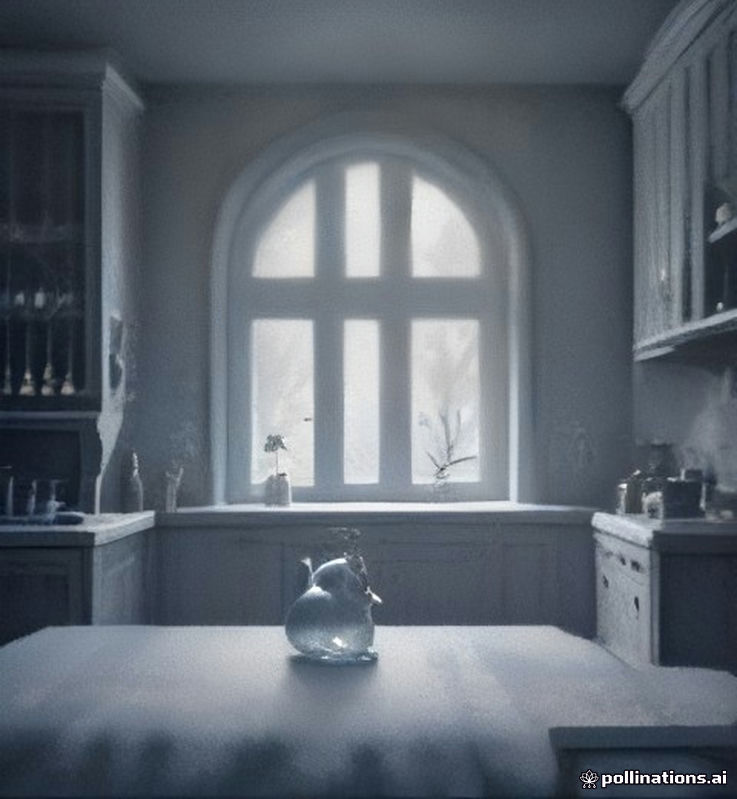
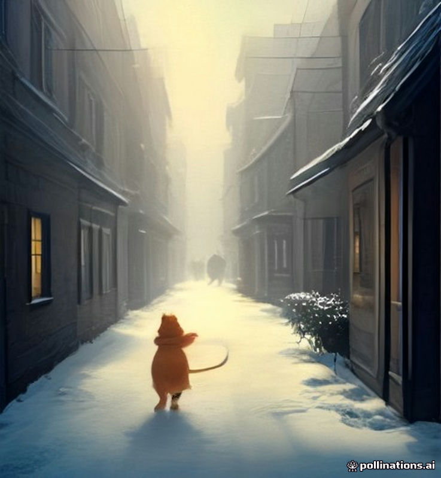

A quiet morning discovery leads to a magical dance of winter patterns on the bakery glass.

The air turned sharp and biting overnight. Pip tapped my ear, his tiny paws trembling with excitement. 'Loki, look at the glass!' he squeaked. We padded softly toward the bakery, our paws leaving little prints in the thin dusting of white snow. The shop was dark, but the window shone like a silver mirror, reflecting the pale, cloudy morning. Something was different. The glass, usually clear enough to see the flour-dusted counters, was now alive with delicate, feathery lines that stretched from corner to corner. It was a masterpiece of cold, quiet art.

I leaned in close, my whiskers brushing against the frozen surface. The frost wasn't just random ice; it held the shape of ferns, mountain peaks, and tiny, sleeping stars. 'It's a whisper,' I purred, my breath creating a small, warm circle that briefly melted the art away. Pip gasped, worried he’d lose the view, but as the heat vanished, the frost rushed back to reform. It was a race between my curious warmth and the winter’s chilly touch. We stood there for hours, watching the window breathe, mesmerized by the silent, shifting geometry of the season.

Pip reached out a brave little hand, touching the coldest spot. To our surprise, the frost patterns didn't break. Instead, they began to hum a faint, musical note that vibrated through the frame. It sounded like bells ringing deep beneath the frozen ground. We realized then that the bakery window was a gateway. Whenever the temperature dropped low enough, the town’s secrets came out to play. These weren't just ice crystals; they were stories of the harvest, frozen in time, waiting for someone to listen to the whispers of the coming solstice.

As the sun finally peeked over the rooftops, the frost began to soften, turning into tiny, crystalline droplets that rolled down the glass like falling stars. The magic retreated, tucking itself back into the cracks of the wooden frames. I felt a surge of inspiration. I couldn't keep this to myself. I hurried back to my studio, my mind buzzing with shapes and colors. I would recreate those windows in my art, so everyone in Loki's Town could see the whispers of the frost, even long after the winter sun had melted the real patterns away.